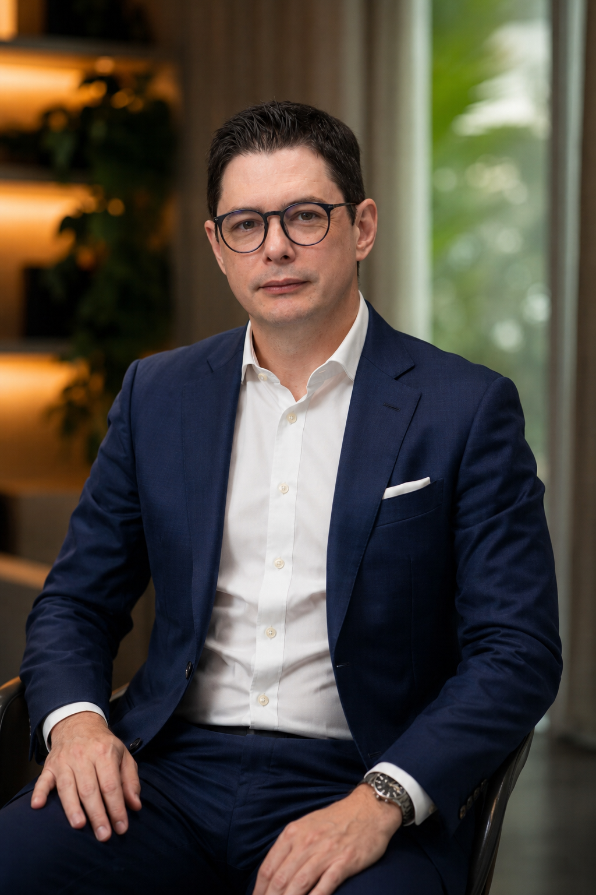

Dois dias intensos, na sede da Board Academy, com Farias Souza e um grupo seleto de empresários que decidiram instalar governança de verdade, proteger o patrimônio e voltar a decidir com clareza. Apenas 40 cadeiras, mediante aplicação.
Sucessão travada, sócios brigando, decisões que dependem 100% de você e um patrimônio que cresceu mais rápido que a estrutura de governança pra protegê-lo. Esse caos, dono, é a sua maior oportunidade.
Todo problema sobe pra sua mesa. Todo cliente grande quer falar com você. Toda decisão de R$50k+ passa por você. Isso não é liderança forte, é um sistema mal desenhado. E enquanto ele existe, sua empresa não vale metade do que poderia valer numa mesa de M&A.
Instalar um Conselho na sua empresa é o único movimento que multiplica valuation, protege patrimônio familiar e te devolve o final de semana. Não é sobre "delegar mais". É sobre construir a arquitetura que faz a empresa rodar sem você depender do humor da segunda-feira.
O Conselho do Dono não é evento de curioso. É trabalho pesado com quem já construiu, já sofreu e agora precisa de um plano prático pra dar o próximo salto.
Você chegou aqui na raça, mas o próximo degrau exige governança, decisão coletiva e uma estrutura que não colapsa quando você tira uma semana pra respirar.
Filho, sócio ou executivo assumindo cadeira em 2 a 5 anos. Você quer o processo blindado, sem confusão de papel, sem briga de família, com regra clara pra todos.
Sabe que empresa com Conselho vale 30 a 50% a mais numa mesa de venda. Quer instalar a governança certa agora pra colher múltiplo daqui a 2 anos.
Não é palestra motivacional. É trabalho de campo: dois dias dentro da Board Academy com Farias Souza abordando Gestão, Liderança, Vendas e Tecnologia. Você sai com plano de ação e clareza pra implementar já na segunda de manhã.
Como estruturar a gestão da sua empresa pra ela rodar sem depender do seu humor. Indicadores, cadência de reuniões, tomada de decisão baseada em dado, não em intuição.
Como parar de ser o gargalo, formar líderes de segunda camada e devolver pra empresa a autonomia que ela precisa pra crescer sem você segurar todas as pontas.
Como sair da venda dependente do dono e construir um motor comercial que gira sozinho. Estrutura de time, funil, metas e método aplicado em empresas de médio porte.
Como usar tecnologia pra reduzir custo, ganhar velocidade e criar diferencial competitivo real. O que priorizar, o que evitar e como implantar sem quebrar a operação.

Farias Souza é fundador e CEO da Board Academy e reconhecido no mercado como "O Conselheiro de Conselheiros". Com mais de 30 anos em multinacionais como Walmart, Leroy Merlin, Burger King e McDonald's, construiu uma expertise rara em estratégia, governança e liderança de alto nível.
Já atendeu mais de 4.500 empresas em treinamentos, direção estratégica e metodologias que ajudaram essas empresas a aumentar faturamento, estrutura interna e processos. Seu foco é a governança proativa: preparar os líderes de hoje pra transformar o futuro das empresas de médio porte brasileiras que sustentam o PIB do país.
Registros reais de edições anteriores na sede da Board Academy. É esse o ambiente e a densidade que você encontra ao vivo.
A Board Academy é a EdTech que reformulou o modelo de formação e desenvolvimento de conselheiros consultivos, independentes, fiscais e de administração no Brasil. Ela chegou pra revolucionar o acesso às posições em Conselhos de Empresas e democratizar o que antes era clube fechado. Nesses dois dias, você entra na sede pra viver o ambiente de dentro pra fora.
Depoimentos reais de empresários que passaram pela Board Academy e viraram o jogo das próprias empresas.
"O Farias me tirou do buraco em que eu tava sem enxergar. Eu era o gerente-geral da minha própria empresa. Instalei o Conselho, fiz o acordo de sócios e hoje trabalho 3 dias por semana faturando o dobro."
"Vim pra formar Conselheiros pra minha empresa e virei Conselheiro em outras três. Multiplicou minha renda, minha rede e minha visão de negócio. Não é curso, é um passaporte."
"O que mais me impressionou foi a densidade. Um dia com o Farias vale mais que MBA que eu fiz em 2 anos. Saí com plano na mão e virei sócio de Conselho de duas empresas depois."
Clique abaixo pra abrir o formulário oficial de aplicação. Evento seletivo para empresários. Sua aplicação é analisada pela curadoria e confirmada por WhatsApp.
Ao enviar, você concorda em receber o contato da equipe do Farias Souza via WhatsApp ou ligação para análise da aplicação.
Em breve, um consultor da equipe do Farias Souza entra em contato via WhatsApp ou ligação pra conduzir a análise da sua aplicação no Conselho do Dono e confirmar sua cadeira.